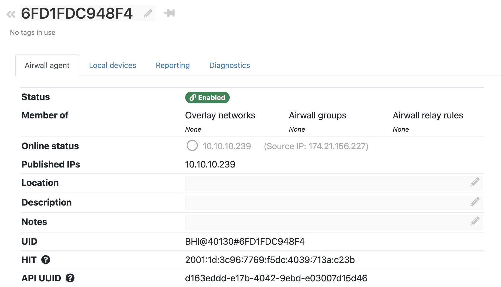

Airshell table command
Full details for the Airshell table command
These tables that show the real-time internal state of Airwall Gateways and a Conductor. All of these tables are included when you run a diagnostic report.
Options
Options:
--limit=COUNT– Display up to COUNT rows.--offset COUNT– Start after COUNT rows.--scope=SCOPE– Limit query to SCOPE.--select COL[,COL]...– Display only the specified columns.
KEY=VALUE
table hip_assoc state=ESTABLISHED Examples
To troubleshoot a single tunnel:
- Find the HIT for the peer Airwall Edge Service on its page in the Conductor:

- On the peer Airwall Edge Service, use the following Airshell table
commands to restrict output to a single peer:
- table hip_assoc peer_hit=2001:19:ce64:2399:3870:3531:3e20:735d
- table decrypt_sadb hit=2001:19:ce64:2399:3870:3531:3e20:735d
- table encrypt_sadb hit=2001:19:ce64:2399:3870:3531:3e20:735d
TABLE
These are the available tables, grouped by the area for which they provide information. If you do not specify a table, you get the list of available tables.
File tables
- file_descriptors
MAP (Conductor) Connection tables
These tables show MAP connection (Airwall Gateway<->Conductor) information
- map_connection (on Airwall Gateways) – Connection information on Airwalls
- m2_connections (on Conductor) – Connection information on the Conductor. Shows two tables, the first allowed connections and the second, denied connections.table
- m2_denied – Denied connections
- m2_allowed – Allowed connections
Tunnel tables
These tables show tunnel information.
- hip_assoc – HIP protocol state of active tunnels. A tunnel (not relayed) will have an encrypt_sadb and decrypt_sadb entry once the HIP base exchange is complete.
-
- pid – Process ID of openhip/airwall process
- id – Protocol thread ID – always 0
- idx – Array index in hip_assoc_table. Entries should be densely packed in the beginning. By default, Airwall Edge Services support up to 1024 HIP associations
- local_hit – Host Identity Tag (HIT) of local Airwall, or lesser of two HITs for relayed association
- peer_hit – HIT of remote Airwall Edge Service, or greater of two HITs for relayed association
- state – HIP association state - https://datatracker.ietf.org/doc/html/rfc7401#section-4.4.4
- last_state_change – Time of last state change, expressed as seconds from now
- last_hip_keepalive – Last HIP UPDATE keepalive, expressed as seconds from now
- local_addr – Local IP address and UDP port
- peer_addr – Remote IP address and UDP port
- update_id – Sequence number of last HIP UPDATE sent
- path_mtu – Path MTU discovered from local interface MTU, Overlay MTU configuration via Conductor, ICMP unreachable or peer Airwall Edge Service
- dh_group – Diffie Hellman group ID
- hip_xfrm – HIP transform (encryption and digest algorithm)
- esp_xfrm - EPS transform (encryption and digest algorithm), corresponds to a_type, e_type in SADB
- keymat_idx – Index of next available key material in HIP association ephemeral key material. This index resets after a rekey UPDATE
- spi_in – Inbound (decrypt) SPI (Security Parameter Index)
- spi_out - Outbound (encrypt) SPI (Security Parameter Index)
- hip_assoc_events – Circular log of recent HIP association events
- encrypt_sadb– Outbound ESP state of tunnels
- pid – Process ID of openhip/airwall process
- id – Protocol thread ID – always 0
- hit – Peer Airwall HIT
- expire – Expiration time, expressed as seconds from now
- last_used – Last packet time, expressed as seconds from now
- a_type – Authentication algorithm
- e_type - Encryption algorithm
- a_len – Authentication key length
- e_len – Encryption key length
- sequence – Next ESP sequence number
- ifindex – Outbound interface index
- src – Source IP address and UDP port
- dst – Destination IP address and UDP port
- spi – ESP SPI
- mtu – Overlay MTU, reflects hip_assoc path_mtu minus encapsulation overhead.
- next_hop – Next Hop MAC address for routed packets
- ndp_probes – Number of NDP probes sent to discover next hop MAC
- arp_probes – Number of ARP probes sent to discover next hop MAC
- ipv6 – Peer supports IPv6 and ICMPv6 keepalive messages
- icmp6_seqno – Next Sequence number of ICMPv6 keepalives
- pkts_tx – Number of packets transmitted
- pkts_dropped – Number of packets dropped, if any.
- bytes_rx – Number of bytes transmitted
- decrypt_sadb – Inbound ESP state of tunnels including relayed tunnels
- pid – Process ID of openhip/airwall process
- id – Protocol thread ID – always 0
- spi – ESP SPI (security parameter index)
- hit – Peer Airwall HIT
- expire – Expiration time, expressed as seconds from now
- last_used – Last packet time, expressed as seconds from now
- a_type – Authentication algorithm
- e_type - Encryption algorithm
- a_len – Authentication key length
- e_len – Encryption key length
- sequence – Last ESP sequence number
- relay_dst_hit – For relayed associations, HIT of destination Airwall Edge Service.
- relay_ifindex - For relayed associations, outbound interface index.
- relay_src - For relayed associations, outbound source IP address and UDP port
- relay_dst - For relayed associations, outbound destination IP address and UDP port
- pkts_rx – Number of packets received and successfully decrypted
- pkts_dropped – Number of packets dropped, if any
- pkts_lost – Number of packets lost, determined from gaps ESP sequence number
- bytes_rx – Bytes received
Relay tables
These tables show information on relays and relay traffic.
decrypt_sadb– Inbound ESP state of tunnels, including relayed tunnels. A relay has two decrypt_sadb entries for each relay connection.hip_assoc– HIP state of active tunnels. A tunnel (not relayed) has an encrypt_sadb and decrypt_sadb entry once the HIP base exchange is complete.jet_ip4_relay- Offloaded relay connections - should reflect decrypt_sadb state.peers- Relay client (indexed by client HIT) underlay IP of the last relay probe.
Overlay trust policy tables
These tables show information on overlay trust policies.
policy_engine- Policy enforcement and east-west / bypass..policy_drops– Recently dropped packets by policy. A closed hashtable of policy drops.
Overlay Configuration tables
This table shows overlay information.
.overlay– Port group information. Can be useful to look up "pgid" to "pg_id" mapping.
Performance tables
These tables can be useful in troubleshooting.
- decrypt_engine– Inbound tunnel handling including relayed traffic
- encrypt_engine – Outbound tunnel handling
- jet_engine –
- hip_proto - HIP protocol processing
- io_worker – Combined dataplane thread
- reader – Dataplane thread counter
- worker – Dataplane thread counter
- writer – Dataplane thread counter
Internal Only
Tables not listed are used internally.